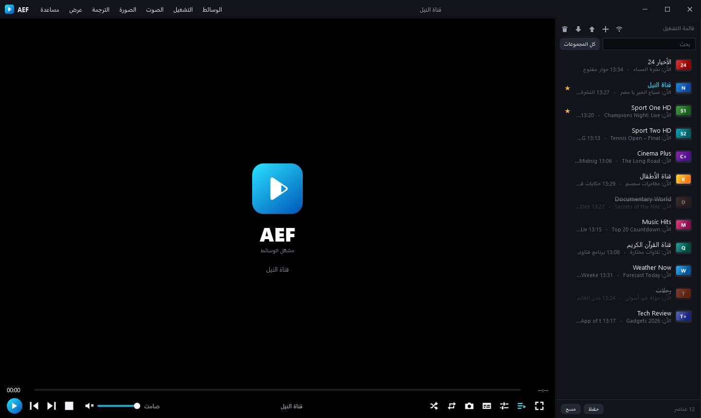
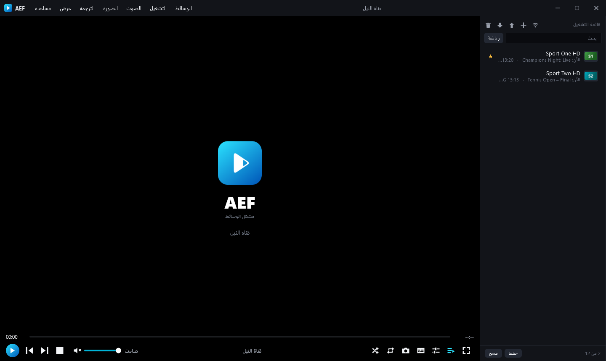
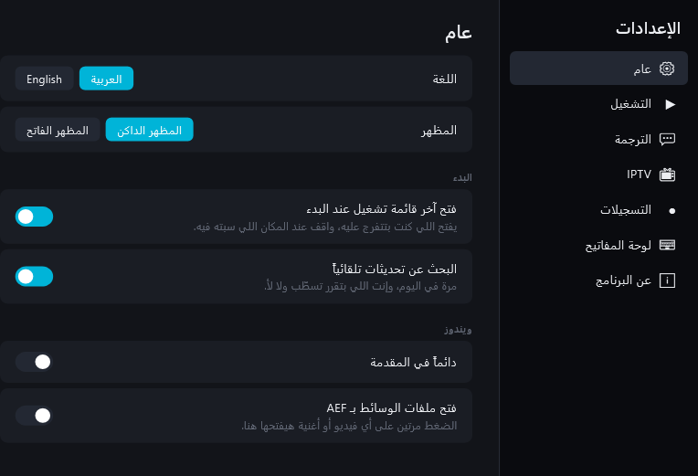

مشغّل وسائط سريع وأنيق،
معمول للمستخدم العربي
أفلامك ومسلسلاتك وأغانيك وقنوات الـ IPTV في برنامج واحد خفيف، بواجهة عربية كاملة من اليمين للشمال، وترجمة عربية بتظهر صح من أول مرة.

كل اللي محتاجه في مكان واحد
من غير برامج زيادة ولا إعدادات معقدة.
بيشغّل كل حاجة
MP4 و MKV و AVI والبث المباشر والموسيقى، وبيستخدم كارت الشاشة عشان التشغيل يبقى ناعم وخفيف.
ترجمة عربية مظبوطة
بيتعرّف لوحده على ملفات الترجمة القديمة اللي بتطلع حروف غريبة، ويدوّر على ترجمة على النت ويحمّلها بضغطة.
مكتبة لأفلامك
أفلامك ومسلسلاتك بصور، والمسلسلات متقسّمة مواسم وحلقات، و"كمّل المشاهدة" من المكان اللي وقفت عنده.
شغّل على التليفزيون
ابعت الفيديو للتليفزيون الذكي اللي في البيت والكمبيوتر يبقى ريموت، أو اعرض الشاشة كلها.
صورة على شريط الوقت
قف بالماوس على أي مكان في شريط الوقت تشوف صورة صغيرة من اللحظة دي قبل ما تروحلها.
علامات ومؤقت نوم
احفظ لحظات في الفيديو وارجعلها بضغطة، وخلّي التشغيل يقف لوحده والصوت بيوطى بالراحة.
IPTV زي ما لازم يكون
ادخل بحساب مزوّد الخدمة مرة واحدة، والقنوات والأفلام والمسلسلات تيجي لوحدها.
حسابات IPTV
اسم المستخدم وكلمة السر وعنوان السيرفر، وخلاص. كلمة السر بتتحفظ متشفّرة على جهازك بس.
دليل البرامج
إيه اللي شغّال دلوقتي وإيه اللي جاي لكل قناة، وجدول اليوم كله مع تذكير قبل البرنامج.
تسجيل البث
سجّل ماتش أو برنامج بضغطة (Ctrl+R)، أو خليه يتسجل لوحده لما يبدأ.
مجموعات ومفضلة وبحث
لوجو كل قناة، المجموعات، بحث سريع بالعربي، المفضلة، وإخفاء القنوات الواقفة.
شكله من جوه
مظهر داكن وفاتح، وكل حاجة بالعربي.


أسئلة شائعة
البرنامج بيوفّر قنوات؟
لأ. البرنامج مشغّل بس: بيشغّل ملف القنوات أو حساب IPTV اللي معاك من مزوّد الخدمة بتاعك.
ويندوز بيقولي "Windows protected your PC"، أعمل إيه؟
اضغط "More info" وبعدين "Run anyway". الرسالة دي بتظهر لأي برنامج جديد لسه مش موقّع رقمياً.
إزاي بيوصلني التحديث؟
البرنامج بيدوّر على تحديثات مرة في اليوم، ولو فيه جديد بيعرض عليك تسطّبه. وبيتأكد من سلامة ملف التحديث قبل ما يسطّبه.
بيجمع بيانات عني؟
لأ. اقرا سياسة الخصوصية: فيها بالظبط البرنامج بيتكلم مع مين ولإيه.
التليفزيون مش ظاهر في "تشغيل على التليفزيون"
اتأكد إن التليفزيون شغّال وعلى نفس شبكة الكمبيوتر، وإن ويندوز سامح للبرنامج يستخدم الشبكة. ولو التليفزيون بيدعم Miracast تقدر تعرض الشاشة كلها.